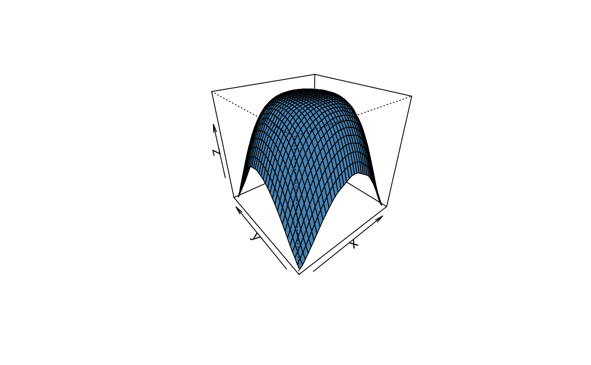

Bivariate Linear Interpolation
stats-interpLinear.RdBivariate Linear Interpolation. Options are available for gridded and pointwise interpolation.
Arguments
- x, y, z
for
linearInterpthe argumentsxandyare two numeric vectors of grid pounts, andzis a numeric matrix or any other rectangular object which can be transformed by the functionas.matrixinto a matrix object. ForlinearInterppwe consider either three numeric vectors of equal length or ifyandzare NULL, a list with entriesx,y,z, or named data frame withxin the first,yin the second, andzin the third column.- gridPoints
an integer value specifying the number of grid points in
xandydirection.- xo, yo
for
linearInterptwo numeric vectors of data points spanning the grid, and forlinearInterpptwo numeric vectors of data points building pairs for pointwise interpolation.
Value
for linearInterp, a list with at least three entries,
x, y and z. The returned values, can be used
directly in persp and contour 3D plotting methods.
for linearInterpp, a data.frame with columns
"x", "y", and "z".
Examples
## Linear Interpolation:
if (requireNamespace("interp")) {
set.seed(1953)
x <- runif(999) - 0.5
y <- runif(999) - 0.5
z <- cos(2 * pi * (x^2 + y^2))
ans = linearInterp(x, y, z, gridPoints = 41)
persp(ans, theta = -40, phi = 30, col = "steelblue",
xlab = "x", ylab = "y", zlab = "z")
contour(ans)
}
